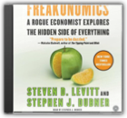

|
Chasing Life: New Discoveries in the Search for Immortality to Help You Age Less Today
Freakonomics: A Rogue Economist Explores the Hidden Side of Everything

Steven D. Levitt, Stephen J. Dubner
Which is more dangerous, a gun or a swimming pool? What do schoolteachers and sumo wrestlers have in common? Why do drug dealers still live with their moms? How much do parents really matter? What kind of impact did Roe v. Wade have on violent crime?These may not sound like typical questions for an economist to ask. But Steven D. Levitt is not a typical economist. He is a much-heralded scholar who studies the riddles of everyday life — from cheating and crime to sports and child rearing — and whose conclusions regularly turn the conventional wisdom on its head. Thus the new field of study contained in this book: Freakonomics. Levitt and co-author Stephen J. Dubner show that economics is, at root, the study of incentives — how people get what they want or need especially when other people want or need the same thing. In Freakonomics, they set out to explore the hidden side of ... well, everything. The inner workings of a crack gang. The truth about real-estate agents. The secrets of the Ku Klux Klan. What unites all these stories is a belief that the modern world is even more intriguing than we think. All it takes is a new way of looking. Steven Levitt, through devilishly clever and clear-eyed thinking, shows how to see through all the clutter. Read by Stephen J. Dubner The Snowball: Warren Buffett and the Business of Life

|


My Library
Collection Total:
199 Items
199 Items
Last Updated:
Sep 29, 2012
Sep 29, 2012
 Made with Delicious Library
Made with Delicious Library